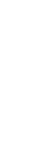
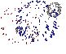
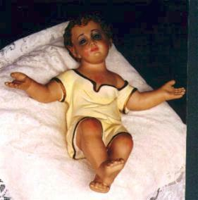
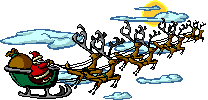
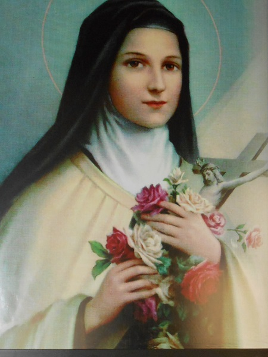
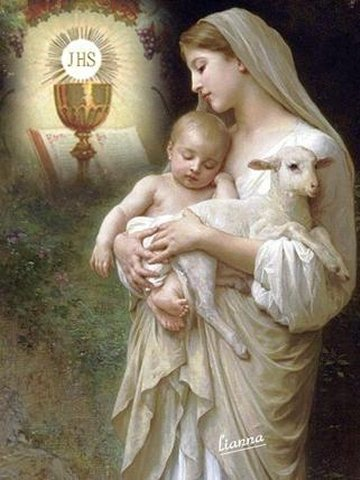
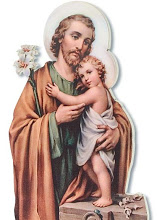
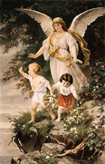

|
DEUS PAI *
JESUS * ESPÍRITO SANTO
 JESUS DE NAZARÉ (O Rei dos Reis) JESUS DE NAZARÉ (O Rei dos Reis)

CORPO E SANGUE DO
SENHOR (Milagres Eucarísticos)
SANTÍSSIMO MISTÉRIO
DEUS PAI - AMOR E MISERICÓRDIA
ADOREMOS O NOSSO
DEUS
CARIDADE DIVINA (Festa do CORPO de DEUS)
A DIVINA MISERICÓRDIA
SANTA FAUSTINA KOWALSKA
A GRANDE PROMESSA DO SAGRADO CORAÇÃO DE JESUS
ADORÁVEL E
MISTERIOSO ESPÍRITO SANTO
A DIVINA FACE DO
SENHOR (O SANTO SUDÁRIO)
O MISTÉRIO DE
DEUS (Santíssima Trindade)
DEVOÇÃO AOS SAGRADOS CORAÇÕES
ORAÇÃO DO PAI NOSSO (comentado por São Tomás de Aquino)
APOCALIPSE
O PURGATÓRIO
A VIA SACRA
A GRAÇA DE DEUS

    
NOSSA SENHORA
MÃE DE DEUS E
NOSSA MÃE
A VIDA DE NOSSA
SENHORA
POEMA DIVINO DE LOUVOR A VIRGEM MARIA
ALEGRIAS DE MARIA
SEGREDOS DO ROSÁRIO
AS DORES DE NOSSA SENHORA
O TERÇO DE NOSSA
SENHORA
NOSSA SENHORA DO CARMO DE GARABANDAL
NOSSA SENHORA DE LA SALETTE

NOSSA SENHORA DE AKITA
NOSSA SENHORA ROSA MÍSTICA
NOSSA SENHORA DE MEDIUGÓRIE
NOSSA SENHORA DO PERPÉTUO SOCORRO
NOSSA SENHORA DE GUADALUPE
NOSSA SENHORA DO CARMO
NOSSA SENHORA DA PENHA
NOSSA SENHORA DAS NEVES
OU SANTA MARIA MAGGIORE
NOSSA SENHORA DAS GRAÇAS - A MEDALHA MILAGROSA
NOSSA SENHORA DE FÁTIMA - SEGREDOS E MISTÉRIO
LUZ QUE EMANA DA MENSAGEM DE FÁTIMA
NOSSA SENHORA DA CONCEIÇÃO APARECIDA
(Padroeira do Brasil)
NOSSA SENHORA DE NAJU
(Milagres Eucarísticos impressionantes)
COROAÇÃO DE NOSSA
SENHORA NO CÉU
NOSSA SENHORA DE LOURDES - A IMACULADA
CONCEIÇÃO (Revelação Divina)
A ORAÇÃO
AVE MARIA (comentada por São Tomás de Aquino)

OS SANTOS
SANTA FRANCISCA ROMANA
A ALMA DE SANTA TERESINHA

SÃO FRANCISCO E SANTA
CLARA DE ASSIS (Vida e Obra)
SÃO FRANCISCO DE SALES
SÃO VICENTE FERRER
SANTA MARIA GORETTI
SANTA JOANA D'ARC
SÃO PIO X
SANTA ISABEL DA HUNGRIA
SANTA GERTRUDES
SÃO GREGÓRIO MAGNO
SANTA INÊS
SÃO PAULO DA CRUZ
SÃO VICENTE DE PAULO
SÃO DANIEL COMBONI
SANTA ÁGUEDA
SANTA ANGELA MERICI
SÃO FILIPE NERI
SANTA TERESA DE JESUS (D'ÁVILA)
VENERÁVEL PAULINE MARIE JARICOT
SÃO LUÍS MARIA
GRIGNION DE MONTFORT
SÃO JOÃO BATISTA DE
LA SALLE
SÃO PEDRO JULIÃO
EYMARD
SÃO BENTO
SANTA BEATRIZ DA SILVA
SÃO LUIZ GONZAGA
SANTA FILOMENA
SÃO JUDAS TADEU
(Causas Impossíveis)
A VIDA ADMIRÁVEL
DE SÃO JOSÉ
A VIDA DE SANTA
EDWIGES
A VIDA DE DOM BOSCO
SÃO GERALDO MAGELA
SANTA ROSA DE LIMA
SÃO CARLOS LWANGA E SEUS COMPANHEIROS (Mártires)
SANTA LUZIA
SÃO DOMINGOS DE GUSMÃO
SANTO ANTONIO MARIA CLARET
A VIDA DE SÃO MAXIMILIANO MARIA KOLBE
SANTO AFONSO MARIA DE LIGÓRIO (Redentoristas)
SÃO BENEDITO
SANTA RITA DE CÁSSIA
SANTA JOANA DE LESTONNAC
SÃO JOÃO DA CRUZ
SÃO TOMÁS DE AQUINO
SANTO ANTONIO
A VIDA DE SANTO ATANÁSIO E DE SANTO ANTÃO

SÃO CAMILO DE LELLIS
SANTO FREI ANTONIO DE SANT'ANNA GALVÃO
SANTA CATARINA DE SENA
PADRE JOSÉ DE ANCHIETA (O APÓSTOLO DO BRASIL)
PADRE PIO DE
PIETRELCINA
SANTA GEMA GALGANI
SANTA BRÍGIDA DA SUÉCIA
PADRE JOÃO MARIA BATISTA VIANNEY
PATRONO DOS SACERDOTES
O SANTO CURA D'ARS
PAPA JOÃO PAULO II (Servo da Fé e da Paz)
SÃO PEDRO APÓSTOLO,
O PESCADOR
SÃO PAULO (APÓSTOLO DOS GENTIOS)
SÃO FRANCISCO
XAVIER
SANTO AGOSTINHO
(Bispo de Hipona)
SÃO BERNARDO
(Abade de Claraval)
  
OS ANJOS

ARCANJO SÃO GABRIEL
ARCANJO SÃO RAFAEL
ARCANJO SÃO MIGUEL
ANJOS DO SENHOR
DIVERSOS

HISTÓRIA DA VIDA
UM MENINO CHAMADO NELSINHO
VISÕES NO PARAÍSO DIVINO
QUEREIS OFERECER-VOS A DEUS?

DOM INÁCIO KUNG (Perseguição Cristã - China Comunista)
VOCAÇÃO PARA A
VIDA
EXERCÍCIOS ESPIRITUAIS
VAMOS REZAR?
A LANÇA DA PAIXÃO
INICIAÇÃO CRISTÃ
(Sacramento do Batismo, Crisma e Eucaristia).
PREPARAÇÃO PARA O CASAMENTO
CURSO DE NOIVOS
PASTORAL DA FAMÍLIA
A Família Brasileira; Visão Cristã do Matrimônio e da Família;
Diretrizes de Ação Pastoral
UM POUCO DE NOSSA HISTÓRIA
TRABALHO E OBRAS
PUBLICIDADE DOS SAGRADOS
CORAÇÕES
ENDEREÇO, INFORMAÇÕES E UTILIDADES
Que nossa MÃE SANTÍSSIMA proteja a sua
caminhada existencial e o SENHOR derrame a Luz do ESPÍRITO em seu coração,
concedendo-lhe alegria interior e a paz que vem de DEUS.
APOSTOLATE OF THE SACRED HEARTS
English
English
Welcome to PORTAL of the SACRED HEARTS. Here you will receive
our attention plus large and more spontaneous for serving you. Because our objective
is to promote a good environment in order to make him to feel at home, in the fraternal
company of LORD'S Apostles.

A LITTLE OF OUR HISTORY
THE WAY OF THE CROSS
WORKS AND REALIZATIONS
ADDRESS
OUR LADY OF NAJU
(Miracles Eucharistics)
HOLY MARY, MOTHER
OF GOD AND OUR MOTHER (Our Lady's Life)
BODY AND BLOOD
OF THE LORD (Eucharistics Miracles)
THE PASSION
LANCE
THE OUR LADY'S
ROSARY
ADORABLE AND MYSTERIOUS
HOLY SPIRIT
That our BLESSED MOTHER can to protect your existential road and the LORD
can to spill the SPIRIT's Light in your heart, granting him the interior happiness and
the peace that comes from GOD.
APOSTOLADO DE LOS SAGRADOS CORAZONES
Español 
Bienvenido
al PORTAL de los SAGRADOS CORAZONES y reciba el calor de nuestra atención
y prontitud espontánea en servir, con el objectivo de que sea acogido con la
más grande dignidad y siéntase en su casa, disfrutando de una fraternal
amistad de los Apóstoles del SEÑOR.
UNA PALABRA EN SU
VIDA
NUESTRA SEÑORA DE NAJU (Milagros
Eucarísticos)
SANTA MARIA,
MADRE DE DIOS Y NUESTRA MADRE (Vida de la Virgen
Maria)
EL ROSARIO
DE NUESTRA SEÑORA
LA LANZA DE LA
PASIÓN
EL CUERPO Y LA SANGRE DEL SEÑOR (Milagros Eucarísticos)
Que nuestra MADRE SANTÍSIMA proteja su caminada existencial y el SEÑOR derrame
la Luz del ESPÍRITU en su corazón, concediéndole la felicidad interior y la paz
que viene de DIOS.
APOSTOLAT
DES SACRÉ COEURS
Français
Bienvenu
au PORTAIL des SACRÉS COEURS et recevez notre chaude attention
et spontané empressement pour vous servir. Notre objectif est de
proportionner une ambiance recherchée pour vous faire vous
sentir à votre maison, avec la satisfaction d'être dans la
familiarité des Apôtres de SEIGNEUR.

LE CORPS ET LE SANG DU SEIGNEUR
(Miracles Eucharistiques)
LA LANCE DE LA
PASSION
LE CHAPELET
DE NOTRE DAME
UN MOT POUR SA
VIE
NOTRE DAME DE NAJU (Miracles
Eucharistiques)
PUBLICITÉ POUR
PRÉSENTATION
SAINTE MARIE, MÈRE
DE DIEU ET NOTRE MÈRE
Que notre MÈRE TRÈS SAINT
protège votre course existentielle et Le SEIGNEUR répande la Lumière de l'ESPRIT
dans votre cœur, en concédant lui le bonheur intérieur et la paix qui vient de
DIEU.
|